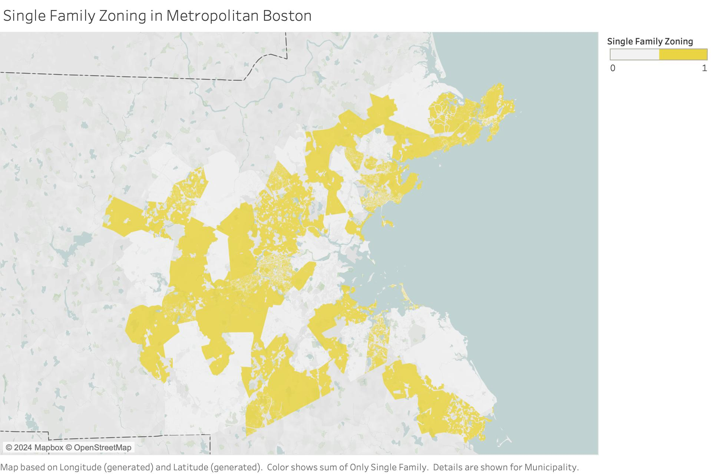
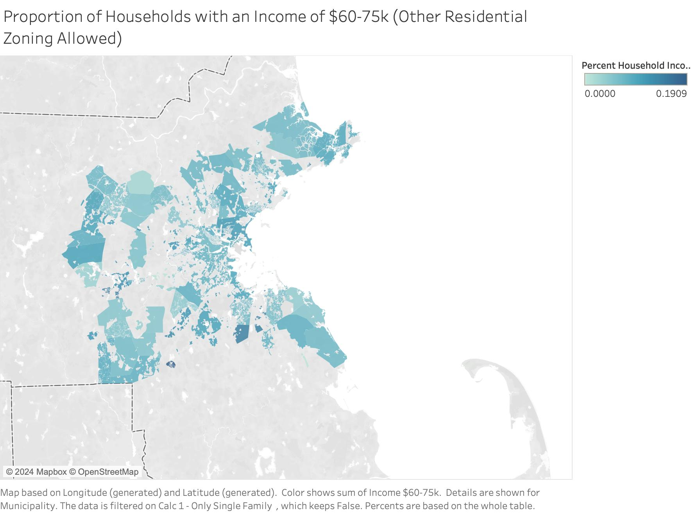

Subtheme: Upzoning
Overall Analysis Questions
- Question 1: What is the spatial relationship between single family zoning and proximity to Boston?
- Question 2: What municipalities of Metropolitan Boston exhibit the greatest use of Single-family Zoning? And the least?
- Question 3: How does income correlate with residential zoning classification?
- Question 4: How does race correlate with residential zoning classification?
- Question 5: What municipalities of Metropolitan Boston exhibit the greatest incidence of residential zoning non-conformity? And the least?
Discoveries & Insights
This visualization serves as a gateway into the data, providing a visual representation of the depth and breadth of Metro Boston’s municipal zoning and land use. This bar chart visualizes the percent of residential land in a particular municipality that has been zoned exclusively for single-family homes (% SFZ). Organized in descending order, the chart shows a notable difference between roughly half of the 101 communities: a little over half of the municipalities zone some proportion of their residential land for Single Family use, while the other half zones none of their residential land zoned for Single-family use.
To situate the data, I visualize municipalities that have residential areas that are zoned for single-family use only (1), and where other housing typologies are permitted (0) on a choropleth map. Presented as a binary using yellow and white, this map provides some interesting spatial patterns and clues as to residential zoning and land use; however, it does not answer deeper questions about who, what, and where upzoning efforts might be challenged, and which municipalities might have the greatest potential to upzone areas of their city. A key pattern emerges: many municipalities with a SFZ lie in the suburbs of Boston, but these areas are not limited to one area–they lie North, West, and South of the central metro region. Yellow was chosen for the visualization, since it is typically associated with single-family zoning classifications.

This choropleth map fills in some of the gaps left behind by the previous choropleth map, in that it provides a continuous percentage—as opposed to a discrete binary—regarding the prevalence of single-family land use. The benefit here is a more nuanced and granular view into how much area is allocated to single-family development, and how proximate these areas are to the urban core of Boston. A yellow color ramp is used, so that areas with greater percentages of SFZ are darker yellow, and areas with less and lighter colored. The spatial pattern noticed earlier becomes more complex: the outermost suburbs of Boston have higher percentages of SFZ, while the inner suburbs of Boston have lower percentages.
Interested in the relationship between population and residential zoning, I compared total population size by % SFZ as a bubble map. Familiar names immediately jump out, such as Boston and Cambridge, while other names fill in the smaller spaces in between. Here, an interesting difference begins to emerge: many of the largest circles are white or pale yellow, while the smallest circles are darker yellow. Without drawing a direct causal relationship, this correlation makes sense: spaces with high populations tend to have dense developments, making single-family housing an inefficient typology in terms of space and population demands. The inverse is true in areas that developed in the post-war era, such as the suburbs, where there was more area to expand with single-family developments, and thus the population density was moderated.
To get a sense of the demographic profile of the 101 municipalities, I visualized the proportion of the population that is white. Some interesting, albeit historically predictable, patterns emerged from the choropleth map. Most notably, the inner core of Metro Boston has a relatively smaller population that is white, as indicated by the lighter shades of red. This stands in stark contrast to the outer belt of Boston, where the municipalities on the periphery are dark red, and thus have higher proportions of white residents. Visualizing the proportion of residents who are white, as opposed to the total number, normalizes the data so that large cities with large total populations do not skew the data, thus presenting an inaccurate representation of where white residents make up the minority/majority of the population. This calculation was done in tableau by dividing the [nhwhi]/[pop] fields to produce a new field [PropWhite].

This visualization serves as a corollary to the previous map, using the same exact set of variables. This map’s only difference is a reversed color ramp. I inverted the color gradient in order to highlight the areas where the proportion of residents who are white is least (i.e. where there are more people of color). So, in this case, darker colors correspond to a smaller proportion of white residents, and lighter colors correspond to a higher proportion of white residents. Again, the patterns emerging here make historical sense, as the downtown is darker than the suburbs due to the legacy of “White Flight”; however, there are a few outlying municipalities with higher proportions of non-white residents, such as Randolph and Framingham.
I further divided the data into two according to the “Only Single Family” variable: areas where the residential use of land is permitted ONLY for single-family housing (1), and areas where other residential zoning is allowed (0). This produced an interesting look into the intersection of income and zoning. From an initial analysis of the data, it appears that the percentage of residents living at or below the poverty line is higher in areas where other residential zoning types are allowed (30.8%) than areas where only single family zoning is allowed (19.4%). This is visualized spatially by the dark blue core around Boston, and the medium-blue areas spread out farther away from downtown Boston.
This visualization expands upon the demographic profile illustrated by the previous two choropleth maps using household income. However, rather than visualize the entire income spectrum on a single map, I wanted to explore the spatial granularity of household incomes, so I focused on three different income levels, with the first being those that fell below the 2016 poverty line. The poverty line for a family of four in 2016 was $24,300, so I combined [incu10] + [inc1015] + [inc1520] + [inc2025] into a single calculated field, and then normalized these data by dividing them by the total number of households [hh] to calculate the proportion of the population that lived at or below the poverty line.
This visualization adheres to a similar format as the previous two choropleth maps regarding household income and zoning, but it visualizes household incomes equal to the Area Median Income (AMI) of greater Boston in 2016. Using the data compiled by the Massachusetts Housing Partnership’s Report “2016 Income Limits for Affordable Units”, I estimated that many of the municipalities’ area median income in 2016 hovered around $70-75, which is captured within the income group [inc6075] from the dataset.
The spatial trends that emerge from these two maps seem less divergent as those from the last two. For example, the upper range of percentages between the two areas are not as different—22.7% in areas where SFZ is permitted (1), and 19% in areas where other residential zoning is allowed (0). Also, it appears that municipalities that are both farther away from Boston and have Single Family Zoning have a smaller proportion of households earning the AMI. This appears to contrast with equally-distant areas where other housing typologies are allowed—in these areas, the colors are a darker blue, and thus suggest a greater share of households living at the AMI. Further analysis is needed to confirm the income profile and distribution of these extant suburbs (i.e. are they poorer or higher-income areas?).

This visualization follows a similar format to the last two, again showing areas where SFZ is the only housing type permitted, and areas where other housing typologies are allowed. In these two choropleth maps, I chose to visualize the proportion of household incomes that were greater than or equal to $200k. This represents the highest measured income group within our dataset, so I was curious to see any spatial continuities or contrasts that resulted from juxtaposing the upper-most income group with those at the AMI and poverty-line.
These two choropleth maps present several interesting patterns. First, in areas where Single Family Zoning was the only permitted residential use type, the highest percentage noted was 55.8%; while areas that permitted other housing typologies had a proportion almost 65%. It is difficult to determine the difference between these two values without further spatial analysis and building typology research. Second, these data mapped mostly onto the outer fringe of metropolitan Boston. In other words, for both SFZ and areas that allowed other-housing types, the suburbs had the highest proportion of households making more than $200k. This is visualized by the darker blue colors encircling the lighter colors around downtown Boston. It is also interesting to note that in areas where other housing typologies are allowed, the suburbs have the highest percentage of wealthy residents. These areas tend to have a very small amount of land dedicated to this use, and yet this is where some of the largest proportions of wealthy residents live. Wellesley exemplifies this point. Here, a minority of the land is used for other residential use, but it has almost 65% of residents earning $200k—the highest proportion in the dataset.
This bar chart visualizes some of the contradictions and non-conformities that exist in the municipalities of our data set. Taking the “% land area” variable, I ran a simple calculation that subtracts the percentage from 100, giving us the inverse: the percent of residential land that is NOT used for single family zoning. I then apply a filter to my newly calculated field to exclude percentages equal to 100 (i.e. areas where 100% of residential land is used for Single Family housing). I apply a second filter using the “Only Single Family” variable to exclude areas where other housing typologies are allowed (0). The result produces a chart that shows the amount of residential land used for other housing typologies in areas where only single-family zoning is permitted. I sorted the data in descending order to emphasize how much residential land has been developed for non-single family purposes, despite the fact that the land falls within a zone dedicated to that use type. There are a number of reasons why these contradictions might be, such as historic developments preceding zoning codes and density requirements. As a result, many communities residential areas’ are already developed with existing, legal non-conforming structures.


Struck by the number of municipalities in the previous bar chart, I created a box plot to show the spread of these data using the same filters, but with “% NOT single family” instead of “% Single Family”—this way the arrangement of the box plot would mirror the bar chart. I wanted to explore another visualization to better understand the spectrum of how much Single Family Zoned land had been used for non-SFH development, and where different municipalities fell on that spectrum. The box plot provided key data points: the upper quartile is 45.82%, the median is 16%, and the lower quartile is 2.51%. The circles represent individual municipalities, and the color of each circle represents the population size of the municipality, with darker colors corresponding to larger populations. This spread communicates that a majority of municipalities’ SFZ is actually developed as Single-family housing—so the reality matches the intent; however, these data still present an important takeaway regarding upzoning efforts: zoning classifications are not absolute or without imperfections. These data confirm what we see everyday: there are countless, often admirable, existing housing typologies that do not conform to a city’s zoning code, and yet they are viable and oftentimes preferable alternatives to what a city prescribes for residential use.

I segmented the data even further to show the income profiles of the top ten municipalities with the greatest amount of single-family housing proportional to their total residential area (% Land Area). Seven of these municipalities’ residential areas have been 100% developed as single family housing.
I normalized the income groups using a similar calculation as mentioned above by dividing them by the total number of households, so that proportional differences can be more effectively drawn between the municipalities. As the data show, many of these towns have households with incomes well above the AMI, many of which earn more than $200k. These data suggest that the economic profile of these municipalities is upper-middle class. A minority of households earn the AMI, with an even smaller proportion living at or below the poverty line.
I performed a similar analysis using the same filters as before, but this time I visualized the top ten largest municipalities (in terms of population size) where other housing typologies are allowed (0). I wanted to get a sense of the income profile of the largest cities in the Metro Boston area, and to juxtapose how these municipalities’ non-SFZ residential areas compared to the previous groups’ SFZ areas.
These data present a more even spread of income groups, as there is not a large skew of upper-income households. There is, however, a notable increase in the proportion of households earning less than $100k per year. Similarly, the proportion of households earning an income at or below the 2016 poverty line is much larger than the previous ten towns discussed.
Taking a similar approach as I did for income, I then visualized the proportion of the population by race for the top ten municipalities with the greatest amount of single-family zoning proportional to their total residential area. These data present a clear demographic composition of these towns, as it reveals a very significant proportion of the total population is white, with Asian residents comprising a distant second-largest proportion of the total population. This connects to historical land use patterns and the effects of exclusionary zoning efforts in the mid- to late-twentieth century. These racist zoning and lending practices denied or delayed home ownership to prospective buyers based on their race. Redlining, restrictive covenants, and blockbusting are some of the historical tactics that help explain homogenous communities such as these.
This stacked bar chart follows a similar method as noted before, visualizing the proportion of the population by race for the top ten most populous municipalities that allow other housing typologies. Compared to the previous group of towns and cities, this cluster is more racially heterogeneous; however, the proportion of residents in these municipalities is still mostly white, if not the overwhelming majority. In Chelsea, a majority of the population is Hispanic or Latine (62%), and white residents make up only 25% of the population. But this contrasts sharply with Franklin, where nearly 92% of residents are white, and only 2% of the population is Hispanic or Latine.
Summary
Upzoning efforts within the Metropolitan Boston area must grapple with the economic, racial, historical, and spatial diversity confronting the 101 municipalities of the region. In this exploratory analysis, some of the areas with the greatest potential for upzoning and diverse housing typologies were visualized. A look into the demographic profile of Metropolitan Boston, and the amount of land that has been allocated to Single-Family Zoning provided helpful insights into how exclusionary zoning has negatively impacted the lived reality of many today. More specifically, in areas with the highest percentage of Single-Family Zoning, income and racial disparities were highest, presenting a strong correlation between SFZ and demographic homogeneity; likewise, areas that permitted other housing typologies correlated with more diverse household incomes and higher proportions of the community that were non-white. Spatial insights also emerged from this analysis. Many suburban and urban communities with Single Family Zoning have existing, non-conforming housing typologies.These apparently “illegal” structures may provide useful precedents for upzoning initiatives, particularly in extant communities where other housing typologies represent a small share of the total residential area.
Further spatial analysis is needed to confirm many of the relationships drawn from this initial analysis. In addition to a closer look at the historical trend of these municipalities, and how they might have changed over time in response to watershed planning/policy interventions, additional analysis on more data—such as housing classification, assessed value, and date of construction—needs to be done. This project did not visualize household size for families (nor non-families), so the next phase of research would explore housing density across Metropolitan Boston using household sizes as the key variable. Incorporating these and other data into the project, new questions regarding zoning, housing availability, density, and demography would help highlight the historical effects of exclusionary zoning and the potential areas of consideration for upzoning.